CS254 Visual Programming · Lecture 2
Introduction to Java GUI Programming
Frames, panels and layout managers. Every slide of Lecture 2 – GUI: Frames, Panels and Layout (49 slides) in order, with its code, diagrams and window screenshots. Each topic opens with a plain-language explanation, and there's a layout playground to try FlowLayout, BorderLayout and GridLayout live.
Slides 1–6
What a GUI is
Introduction to JAVA GUI Programming 1
Graphical User Interface 2
- Many Java application use a graphical user interface or GUI
- A GUI is a graphical window or windows that provide interaction with the user.
- GUI's accept input from:
- the keyboard
- a mouse.
- A window in a GUI consists of components that:
- present data to the user
- allow interaction with the application.
Why are we still teaching GUI and desktop programming in 2025? 3
- Because there are still many desktop applications around (even if they are less and less used)
- Because the same concepts and the same knowledge can be applied in the development of apps for smartphones and tablet
- Furthermore, will see that if we decouple the GUI, the presentation layer, from the application logic, the GUI becomes just a front-end of our application logic and it will be easy to switch from one front-end to another
Graphical user interfaces (GUI) and OOP 4
- Object-oriented programming is very well suited for GUI programming
- GUI components or controls are natural objects: windows, buttons, labels, text fields, etc., GUI programming is naturally asynchronous and event oriented
- In an application with a GUI, the main method is responsible to initialize and assemble the GUI and the application logic, and then to make the GUI visible
Introduction 5
- Some common GUI components are:
- buttons, labels, text fields, check boxes, radio buttons, combo boxes, and sliders.
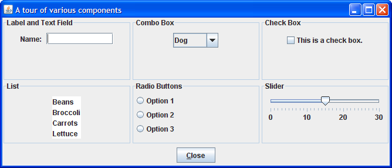
GUI Programming 6
- GUI programs are event-driven
- Basic types of GUI Programs
- Stand-alone applications
- Applets
- Stranded GUI library
- AWT
- SWINIG
Slides 7–10
AWT vs Swing
Abstract Windowing Toolkit (AWT) 7
- IS a Original Java GUI API
- Very limited in capability
- Few components
- API not well structured, particularly event handling for user actions
- Not entirely portable (used native widgets)
JFC/Swing 8
- Java Foundation Classes (or "Swing")
- Replacement for AWT (although does share some classes)
- Also provide basis for developing new GUI features (which are being continually added)
- What does Swing include?
- 100% Java
- Swing components (more, and more sophisticated)
- Pluggable Look and Feel Support
- Accessibility API
- Better graphics support (Java 2D)
- Drag and Drop
JFC/Swing cont… 9
- Disadvantages
- Can be slow (resource hungry)
- Large complex API (big learning curve)
- Many features best suited for GUI builders, IDEs
- Important to use Swing and not AWT
- Swing is the recommended way to build Java GUIs
Design Stages of the GUI 10
- Design the user interface
- Organising pre-built GUI components to build windows, dialogs
- E.g buttons, tables, menus, etc
- Writing the application logic
- What does the application do?
- Writing event-handling code to tie the GUI components to the application logic
Slides 11–14
The Component hierarchy
The Component hierarchy 11
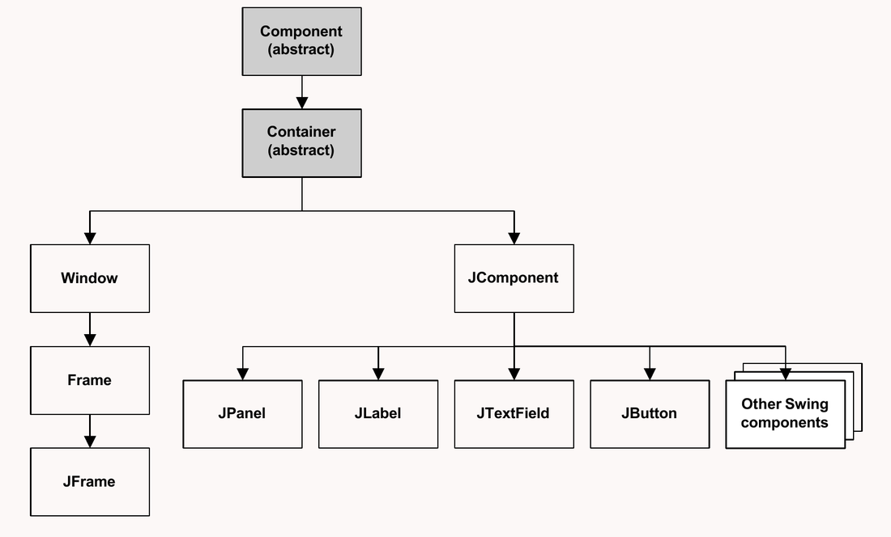
A summary of the classes in the Component hierarchy 12–13
| Class | Description | Slide |
|---|---|---|
| Component | An abstract base class that defines any object that can be displayed. | 12 |
| Container | An abstract class that defines any component that can contain other components. | 12 |
| Window | The AWT class that defines a window without a title bar or border. | 12 |
| Frame | The AWT class that defines a window with a title bar and border. | 12 |
| JFrame | The Swing class that defines a window with a title bar and border. | 12 |
| JComponent | A base class for Swing components such as JPanel, JButton, JLabel, and JTextField. | 12 |
| JPanel | The Swing class that defines a panel, which is used to hold other components. | 13 |
| JLabel | The Swing class that defines a label. | 13 |
| JTextField | The Swing class that defines a text field. | 13 |
| JButton | The Swing class that defines a button. | 13 |
GUI terms 14
- The window that contains the GUI is called a frame.
- The frame contains a panel that contains the controls that are displayed by the application.
- Some text fields are not editable. They're used to display output, not to accept user input.
Slides 15–19
The containment hierarchy
User interface 15
- A GUI is built in layers.
- Bottom most layer is the window (
Container)- Contains all other components
- Can provide basic features like maximise/minimise buttons, title bar, menu bar, etc
- On top of this are layered (
Component)- Components, e.g. buttons, text fields
- or intermediate containers, e.g. panels
- Arrangement of components in a contained is handled by a layout manager
- Its job is to instruct components on how to arrange themselves so the GUI is drawn correctly.
The containment hierarchy 16
- This layered GUI can be viewed as a hierarchy of components
- NOT an inheritance hierarchy,
- It just describes how components are nested one within another
Containment hierarchy 17
- To make a component visible, its containment hierarchy must be included into a JFrame o another window object
- JPanels are containers to which usually we add components
- Each component can belong to just one container
- Other containers to which we add components are JToolBar, JMenu, and JPopupMenu
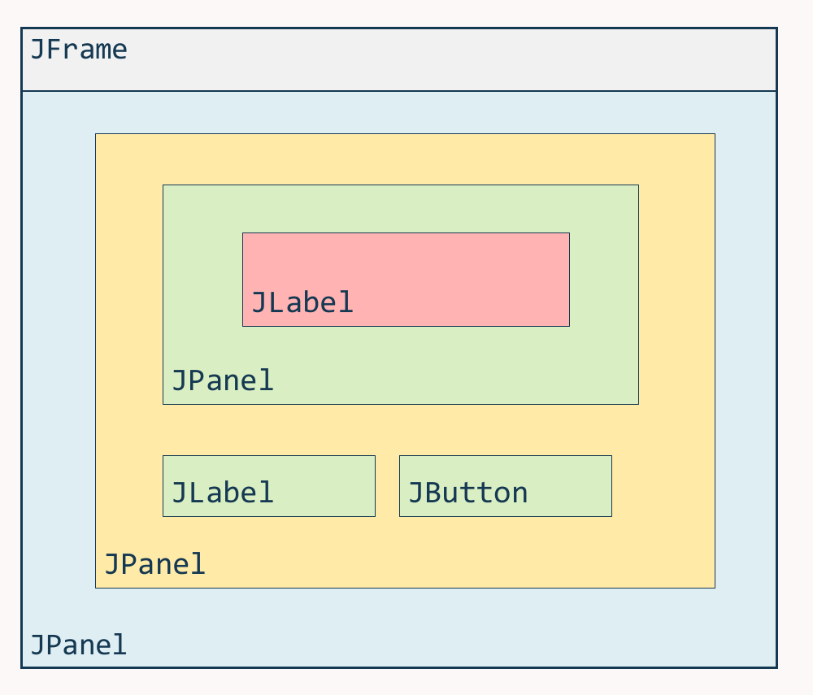
GUI Application 18
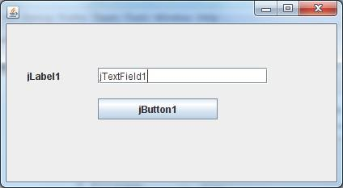
jLabel1, jTextField1 and jButton1.The containment hierarchy 19
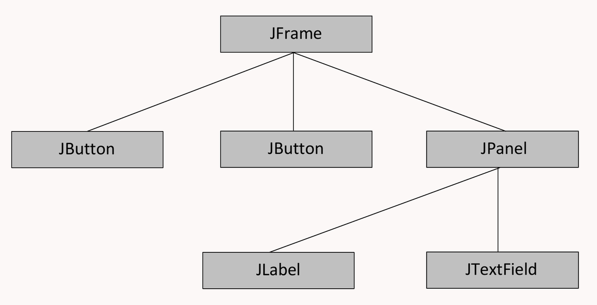
Slides 20–29
Top-level containers and JFrame
Swing Top level containers 20
- JWindow
- Basic no frills window, just a square on the screen
- JFrame
- The basic Swing window. Offers basic window controls, resizable
- JDialog
- For building dialog boxes, e.g. File open/save
- JApplet
- For building applets, embedded into a web page
Working with JFrames 21
- Many different possibilities, but the basics include:
- Setting window title
- Setting location on screen
- Setting size of window
- Restricting resizes
- Set close operation (exit the program), as by default it does nothing.
JFrame 22
A window with a title bar, a resizable border, and possibly a menu bar.
- A frame is not attached to any other surface.
- It has a content pane that acts as a container.
- The container uses BorderLayout by default.
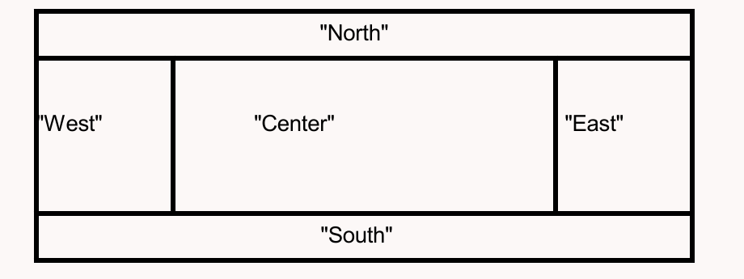
- A layout manager, an instance of one of the layout classes, describes how components are placed on a container.
JFrame jf = new JFrame("title"); // or JFrame()
jf.setSize(300, 200); // width, height in pixels (required)
jf.setVisible(true); // (required)
jf.setTitle("New Title");
jf.setLocation(50, 100); // x and y from upper-left cornerSet methods of the Component class 23–24
Notes
- When you set the location and size of a component, the unit of measurement is pixels,
- which is the number of dots that your monitor uses to display a screen.
- The preferred way to set the location of a component is to use a layout manager.
| Method | Description | Slide |
|---|---|---|
setSize(intWidth, intHeight) | Resizes this component using two int values. | 23 |
setLocation(intX, intY) | Moves this component to the x and y coordinates specified by two int values. | 23 |
setBounds(intX, intY, intWidth, intHeight) | Moves and resizes this component. | 23 |
setEnabled(boolean) | If the boolean value is true, the component is enabled. If false, the component is disabled, so it doesn't respond to user input or generate events. | 24 |
setVisible(boolean) | Shows this component if the boolean value is true. Otherwise, hides it. | 24 |
setFocusable(boolean) | Determines whether or not this component can receive the focus. | 24 |
setName(String) | Sets the name of this component to the specified string. | 24 |
Get methods of the Component class 25
| Method | Description |
|---|---|
getHeight() | Returns the height of this component as an int. |
getWidth() | Returns the width of this component as an int. |
getX() | Returns the x coordinate of this component as an int. |
getY() | Returns the y coordinate of this component as an int. |
getName() | Returns the name of this component as a String. |
Other methods of the Component class
| Method | Description |
|---|---|
isEnabled() | Returns true if the component is enabled. |
isVisible() | Returns true if the component is visible. |
requestFocusInWindow() | Moves the focus to the component. |
Common methods of the Frame class 26
| Method | Description |
|---|---|
setTitle(String) | Sets the title to the specified string. |
setResizable(boolean) | If the boolean value is true, the user can resize the frame. |
The setDefaultCloseOperation method of the JFrame class 27
| Method | Description |
|---|---|
setDefaultCloseOperation(action) | Sets the default close action for the frame. |
Constants to set the default close operation
| Constant | Description |
|---|---|
JFrame.EXIT_ON_CLOSE | Exits the application when the user closes the window. |
WindowConstants.DO_NOTHING_ON_CLOSE | Provides no default action, so the program must explicitly handle the closing event. |
WindowConstants.HIDE_ON_CLOSE | Hides the frame when the user closes the window. This is the default action. |
WindowConstants.DISPOSE_ON_CLOSE | Hides and disposes of the frame when the user closes the window. |
Adding Components to a Frame 28
- A JFrame has several areas
- Window decorations
- (Optional) Menu bar
- Content pane
- Content pane is where components are added.
- Content pane is a Container object
- Obtain reference to the content pane, and then add another component to it
JFrame frame = new JFrame("Example");
JButton button = new JButton("Click me!");
frame.getContentPane().add( button );A complete JFrame program 29
import javax.swing.*;
public class SimpleJFrame {
public static void main(String[] args) {
// Create a JFrame instance
JFrame frame = new JFrame("Simple JFrame");
// Set default close operation
frame.setDefaultCloseOperation(JFrame.EXIT_ON_CLOSE);
// Set size of the frame
frame.setSize(400, 300);
// Make the frame visible
frame.setVisible(true);
}
}Added · What you see when you run it
Slides 30–34
Common properties and JPanel
Common Properties (Applicable to Most Components) 30
- setText(String text) – Sets the text of components like JLabel, JButton and JTextField.
- setFont(Font font) – Defines the font style and size.
- setForeground(Color color) – Changes the text color.
- setBackground(Color color) – Sets the background color.
- setEnabled(boolean enabled) – Enables or disables user interaction.
- setVisible(boolean visible) – Shows or hides the component.
- setToolTipText(String text) – Adds a tooltip when hovering over the component.
JPanel 31
The default container class in Swing. A rectangular component, which serves two main purposes: it can be used as a canvas that one draws on or it can be used as containers to embed further graphical components.
JPanel()The size of panel is set to default values, 10 by 10 pixel on most systems.JPanel(LayoutManager mgr)Constructs a panel with the given layout (default = flow layout).setBackground(Color c)sets the background colour of the panel. The classColoris from the AWT library. There, some colours are predefined, e.g. red byColor.red. By default the background colour is grey.setPreferredSize(Dimension d)sets the size of the panel.- The class
Dimensionis from the AWT library. The constructor has the syntaxDimension(int width, int height). Bothwidthandheightare in pixels.
- The class
Simple Jpanel Example 32
import java.awt.*;
import javax.swing.JPanel;
public class ColorPanel extends JPanel
{
// Generate a JPanel with background color col .
public ColorPanel(Color col)
{
this.setBackground(col);
}
// Generate a JPanel with background color col, width width, and height height .
public ColorPanel(Color col,int width,int height)
{
this.setPreferredSize(new Dimension(width,height));
this.setBackground(col);
}
}Simple Jpanel Example (cont.) 33
public class SimplePanelFrame extends SimpleFrame
{
public SimplePanelFrame()
{
ColorPanel CPWest = new ColorPanel(Color.white,50,20);
ColorPanel CPEast = new ColorPanel(Color.red);
ColorPanel CPNorth = new ColorPanel(Color.yellow);
ColorPanel CPSouth = new ColorPanel(Color.green);
ColorPanel CPCenter = new ColorPanel(Color.blue);
this.getContentPane().add(CPWest,BorderLayout.WEST);
this.getContentPane().add(CPEast,BorderLayout.EAST);
this.getContentPane().add(CPNorth,BorderLayout.NORTH);
this.getContentPane().add(CPSouth,BorderLayout.SOUTH);
this.getContentPane().add(CPCenter,BorderLayout.CENTER);
}
}Simple Jpanel Example (cont.) 34
public class SimplePanelFrameDriver
{
public static void main(String[] args)
{
SimplePanelFrame spFrame = new SimplePanelFrame();
spFrame.showIt("Simple Panel Frame");
}
}Added · Roughly what the window looks like
import javax.swing.JFrame;
public class SimpleFrame extends JFrame
{
public SimpleFrame()
{
this.setSize(200, 200);
this.setDefaultCloseOperation(JFrame.EXIT_ON_CLOSE);
}
public void showIt(String title)
{
this.setTitle(title);
this.setVisible(true);
}
public void showIt(String title, int x, int y)
{
this.setTitle(title);
this.setLocation(x, y);
this.setVisible(true);
}
}Slides 35–38
Layout managers and FlowLayout
Layout Managers 35
- Responsible for layout out (arranging) components in a Container
- Several different types with different uses
- None of them provide for precise x-y alignment, unlike VB forms
Layout Managers in Java 36
In Java Swing, Layout Managers are used to arrange components (such as buttons, text fields, labels, etc.) in a container (like JFrame, JPanel). Java provides several built-in layout managers to simplify GUI design. Instead of manually setting component positions, layout managers handle the placement and resizing dynamically.
Types of Layout Managers in Java
- FlowLayout
- BorderLayout
- GridLayout
- CardLayout
- GridBagLayout
- BoxLayout
- GroupLayout
- SpringLayout
FlowLayout 37
public FlowLayout()
The default layout for containers other than JFrame treats container as a left-to-right, top-to-bottom "paragraph".
- Components are given preferred size, horizontally and vertically.
- Components are positioned in the order added.
- If too long, components wrap around to the next line
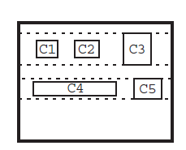
FlowLayout()generates a layout which by default has five pixels between the components in a row and five pixels between the rows.Flowlayout(int align)specifies the alignment of the components, wherealignis one ofFlowLayout.RIGHT,FlowLayout.LEFT,FlowLayout.CENTERFlowlayout(int align, int hdist, int vdist)specifies the horizontal distancehdistbetween the components in a row and the vertical distancevdistbetween rows.
FlowLayout example 38
- Arranges components in a row (left to right) and moves to the next row if space is insufficient.
- Default for
JPanel.
import javax.swing.*;
import java.awt.*;
public class FlowLayoutExample {
public static void main(String[] args) {
JFrame frame = new JFrame("FlowLayout Example");
frame.setLayout(new FlowLayout(FlowLayout.CENTER, 10, 10));
for (int i = 1; i <= 5; i++) {
frame.add(new JButton("Button " + i));
}
frame.setSize(300, 200);
frame.setDefaultCloseOperation(JFrame.EXIT_ON_CLOSE);
frame.setVisible(true);
}
}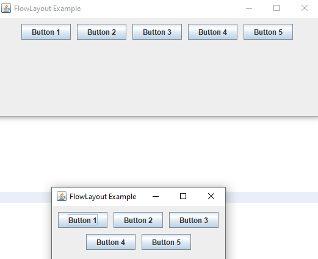
Slides 39–42
BorderLayout
BorderLayout 39
public BorderLayout()
This is the default layout for a JFrame.
Divides container into five regions:
- NORTH and SOUTH regions expand to fill region horizontally, and use the component's preferred size vertically.
- WEST and EAST regions expand to fill region vertically, and use the component's preferred size horizontally.
- CENTER uses all space not occupied by others.
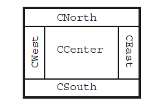
myFrame.setLayout(new BorderLayout());
Border Layout 40
- This is the default layout for JFrame
- Divides the content pane into 5 areas (north, south, east, west, center)
- Areas are expanded/contracted as needed, along with their contents.
- Therefore ignores preferred size of the components.
- Center is the default if not specified.
- Adding two components to the same zone means they get added one on top of the other
- Instead add the components to a JPanel, and then add that instead.
Border Layout 41
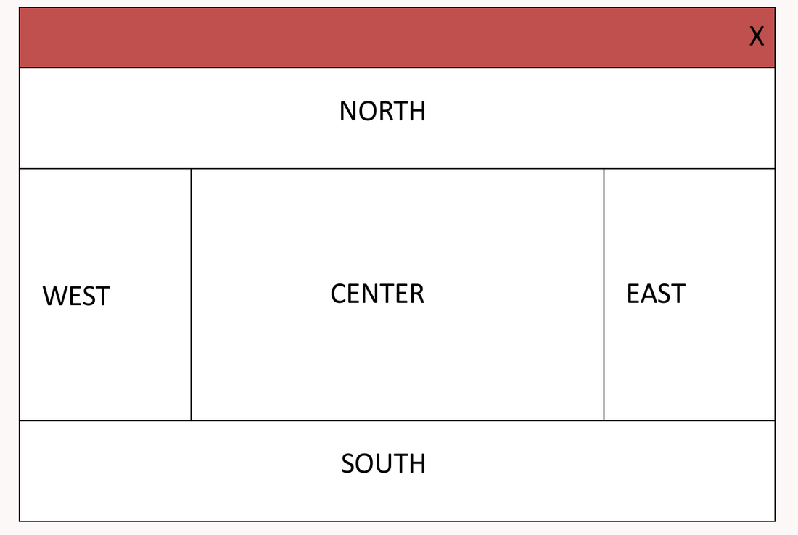
BorderLayout example 42
Divides the container into five regions: North, South, East, West, Center. Default for JFrame.
import javax.swing.*;
import java.awt.*;
public class BorderLayoutExample {
public static void main(String[] args) {
JFrame frame = new JFrame("BorderLayout Example");
frame.setLayout(new BorderLayout(10, 10));
frame.add(new JButton("North"), BorderLayout.NORTH);
frame.add(new JButton("South"), BorderLayout.SOUTH);
frame.add(new JButton("East"), BorderLayout.EAST);
frame.add(new JButton("West"), BorderLayout.WEST);
frame.add(new JButton("Center"), BorderLayout.CENTER);
frame.setSize(400, 300);
frame.setDefaultCloseOperation(JFrame.EXIT_ON_CLOSE);
frame.setVisible(true);
}
}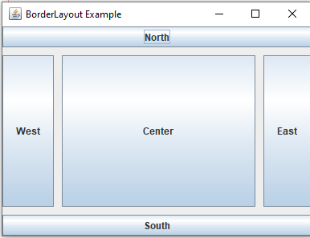
new BorderLayout(10, 10) puts 10-pixel gaps between regions.Slides 43–46
GridLayout
GridLayout 43
public GridLayout(int rows, int columns)
- Treats container as a grid of equally-sized rows and columns.
- Components are given equal horizontal / vertical size, disregarding preferred size.
- Can specify 0 rows or columns to indicate expansion in that direction as needed
setHgap(int hdist)setVgap(int vdist)
The width of the gaps can be passed between the columns (hdist) and rows (vdist):
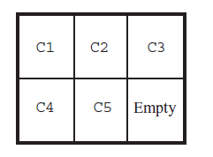
Grid Layout 44
- Divides the container into a rectangular grid
- Configurable number rows/columns
- Each grid location is of equal size, one component assigned to each.
- Automatically assigns components to next available location
GridLayout constructors 45
| Constructor | Purpose |
|---|---|
GridLayout(int rows, int cols) | Creates a grid layout with the specified number of rows and columns. All components in the layout are given equal size. One, but not both, of rows and cols can be zero, which means that any number of objects can be placed in a row or in a column. |
GridLayout(int rows, int cols, int hgap, int vgap) | Creates a grid layout with the specified number of rows and columns. In addition, the horizontal and vertical gaps are set to the specified values. Horizontal gaps are places between each of columns. Vertical gaps are placed between each of the rows. |
GridLayout example 46
- Arranges components in a grid (rows × columns).
- Components are resized to fit evenly.
import javax.swing.*;
import java.awt.*;
public class GridLayoutExample {
public static void main(String[] args) {
JFrame frame = new JFrame("GridLayout Example");
frame.setLayout(new GridLayout(2, 3, 10, 10)); // 2 rows, 3 columns, 10px gap
for (int i = 1; i <= 6; i++) {
frame.add(new JButton("Button " + i));
}
frame.setSize(400, 200);
frame.setDefaultCloseOperation(JFrame.EXIT_ON_CLOSE);
frame.setVisible(true);
}
}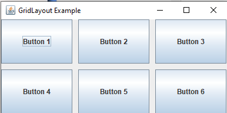
Slides 47–49
Layout example and other layouts
Layout Example 47
import java.awt.LayoutManager;
import its.SimpleFrameWithPanels.ColorPanel;
import java.awt.Color;
public class LayoutFrame extends SimpleFrame
{
public LayoutFrame(LayoutManager layout)
{
this.getContentPane().setLayout(layout);
ColorPanel CP1 = new ColorPanel(Color.red,30,30);
ColorPanel CP2 = new ColorPanel(Color.yellow,40,20);
ColorPanel CP3 = new ColorPanel(Color.green);
ColorPanel CP4 = new ColorPanel(Color.blue);
ColorPanel CP5 = new ColorPanel(Color.white,80,20);
this.getContentPane().add(CP1);
this.getContentPane().add(CP2);
this.getContentPane().add(CP3);
this.getContentPane().add(CP4);
this.getContentPane().add(CP5);
}
}Layout Example (cont.) 48
import java.awt.FlowLayout;
import java.awt.GridLayout;
public class LayoutDriver
{
public static void main(String[] args)
{
FlowLayout flowLayout1 = new FlowLayout();
LayoutFrame flow1Frame = new LayoutFrame(flowLayout1);
flow1Frame.showIt("Flow Layout 1",60,60);
FlowLayout flowLayout2 = new FlowLayout(FlowLayout.LEFT,40,30);
LayoutFrame flow2Frame = new LayoutFrame(flowLayout2);
flow2Frame.showIt("Flow Layout 2",300,60);
GridLayout gridLayout = new GridLayout(2,4);
LayoutFrame gridFrame = new LayoutFrame(gridLayout);
gridFrame.showIt("Grid Layout",540,60);
}
}Three windows open side by side (at x = 60, 300 and 540). Try the same three setups in the playground below.
Other layout managers 49
- Card Layout
- Arranges components like a deck of cards
- Only one card visible at a time
- Box Layout, Grid Bag Layout
- Very sophisticated managers, used by GUI builders for very precise GUI designs.
- Not recommended for hand use!
Added · interactive
Layout playground
Pick a layout, change its settings and the window width, and watch the buttons rearrange the way Swing would. The Java line underneath updates as you go.
All of Lecture 2
Flashcards
Tap the card to flip it. Each answer names the slide it comes from.